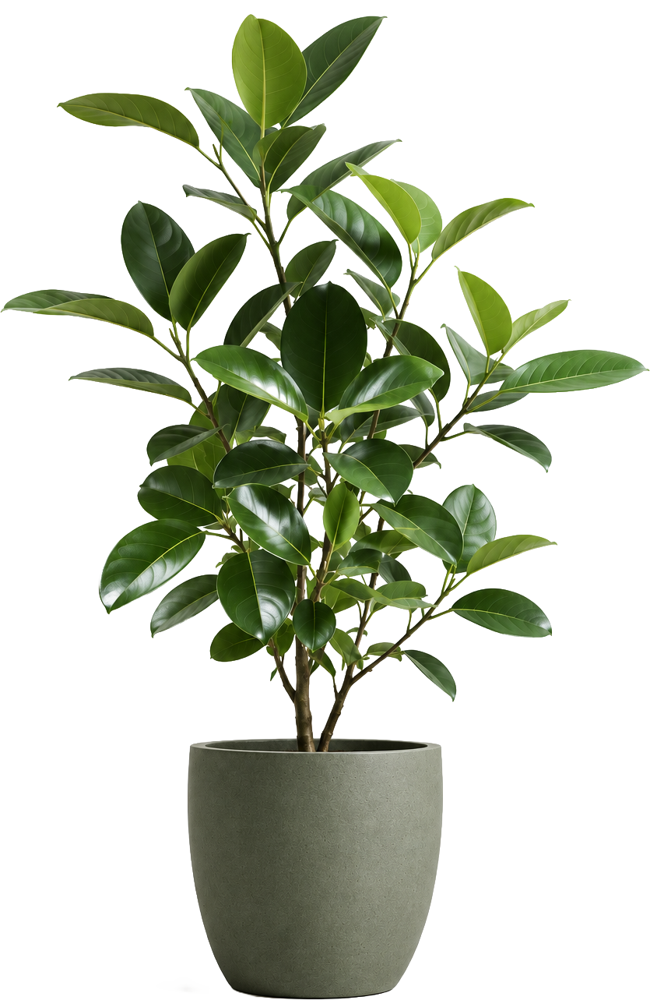

Connect phones, sensors and boards to visuals and sound — no code required. Free, open, and it runs entirely on your machine.
Scan with your phone camera. No typing.
First launch. The app is not code-signed yet, so your OS asks once. On macOS: right-click FIELD → Open → Open. On Windows: More info → Run anyway.
Open FIELD. It starts a small server on your computer.
Put your phone and computer on the same Wi-Fi.
Open the Sensors panel. Scan the QR code with your phone.
Draw a Cue from a sensor to an output. Tilt your phone — the canvas responds.
Make one working connection: your phone's tilt or touch moves something on the canvas.
Two phones, two boards, or a phone and a board — talking to each other or to one canvas.
Open this page on your phone and your computer. Enter a 6-digit code to pair them, then shake or swipe your phone and watch a shape react live — right in the browser.
Step-by-step: write, install, and test a plugin for a sensor chip FIELD doesn't know yet.
Read live FIELD values in your own sketch or web page via field-bridge.js — for when you'd rather write code than use the canvas.
The same .field-plugin.json format as guide 03, written for an AI coding assistant to read.
> guides 04 & 05 lead to one page. It walks through a worked ESP32 + p5.js example, then links both machine-readable specs — read them yourself, or paste them into an AI coding tool (Claude, Cursor, …) and let it generate correct FIELD code for you.
